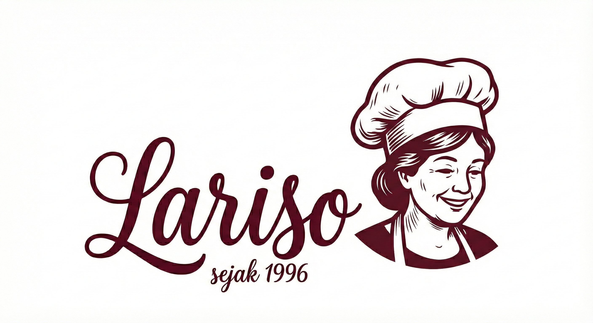
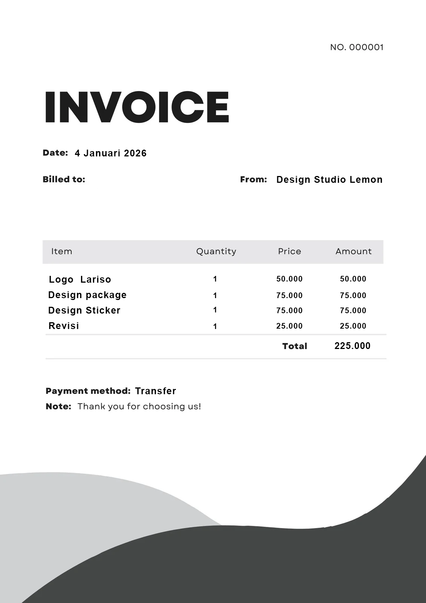

Chef Mascot Construction
I used the mascot as the emotional anchor so the brand could feel inviting before the customer even reads the product line.
For Lariso, my goal was to shape a snack brand that felt warm, character-led, and instantly recognizable. I designed the identity as a point-to-point story: from logo construction, to packaging iteration, to the final 3D pouch presentation and supporting invoice collateral.

I approached Lariso as a shelf-memory problem. The brand needed to feel friendly enough for a snack audience, structured enough for packaging, and flexible enough to grow into social media, sales materials, and everyday client touchpoints without losing its personality.
I decided to start with a packaging-first lens so every design move would support real product visibility.
My goal was to make the final hero image feel like the result of a system: logo, pouch design, and supporting brand materials working together.
This banner acts as a placeholder for the final photo-realistic pouch mockup while preserving the exact slot for the real export.
I decided to build the identity around a chef mascot because I wanted Lariso to feel warm, handcrafted, and immediately personable. Instead of treating the logo as one fixed graphic, I developed it as a flexible family that could adapt to different contexts without losing recognition.
My first priority was the mascot construction itself: expression, silhouette, and proportion had to feel friendly and clear even at small sizes. From there, I expanded the system into a round logo for social use and compact placements, plus a cleaner script-based main logo that could sit more comfortably on the front of the stand-up pouch.
That flexibility mattered. It meant the brand could feel expressive in marketing moments, but still stay legible and controlled when the packaging needed a cleaner hierarchy.
I used the mascot as the emotional anchor so the brand could feel inviting before the customer even reads the product line.

I kept the circular mark compact so it could carry the brand on avatars, stickers, and smaller placements.

I simplified the primary wordmark so the front packaging layout could breathe and the name could land faster.
I treated the stand-up pouch as an iterative design problem rather than a one-pass visual. The first concept explored stronger decorative energy and a fuller layout, but I felt the front panel still needed a clearer story. The packaging needed warmth and shelf appeal, but it also needed immediate hierarchy.
Based on that, I refined the concept into a warmer, cleaner direction. I made the mascot and wordmark more intentional, simplified the supporting details, and gave the composition more breathing room so the pouch could feel polished instead of crowded. Every change was driven by feedback, readability, and what would actually help the brand perform in a real market context.

I explored a more decorative first pass to test presence and flavor personality, but it showed me where the hierarchy still needed control.

I refined the structure so the pouch felt warmer, cleaner, and easier to read at a glance while still keeping the brand lively.

I used the final 3D presentation to prove that the system worked beyond flat artwork. The pouch mockup helped me evaluate color balance, front-facing clarity, and the way the logo family held together in a more realistic retail setting.
My goal was to show Lariso as a complete brand system, not just a good-looking pouch. That is why I extended the identity into business-facing collateral like an invoice. I wanted the client to feel the same brand confidence in operational documents that customers would feel on packaging.
Applying the identity to an invoice helped reinforce consistency at every level of the business. The typography, logo treatment, and color rhythm become repeatable assets, which makes the brand feel more professional and more trustworthy across every interaction.

I kept the invoice direction clean and structured so it would feel practical, but still unmistakably Lariso. That kind of consistency is what helps a smaller food brand look more established and credible from the first order to the final handoff.
I can turn the Lariso-style structure into a full system for logos, packaging, and collateral.